Maps each level to an evenly spaced hue on the colour wheel. It does not generate colour-blind safe palettes.
Arguments
- ...
Arguments passed on to
discrete_scalepaletteA palette function that when called with a single integer argument (the number of levels in the scale) returns the values that they should take (e.g.,
scales::hue_pal()).breaksOne of:
limitsOne of:
NULLto use the default scale valuesA character vector that defines possible values of the scale and their order
A function that accepts the existing (automatic) values and returns new ones. Also accepts rlang lambda function notation.
dropShould unused factor levels be omitted from the scale? The default,
TRUE, uses the levels that appear in the data;FALSEuses all the levels in the factor.na.translateUnlike continuous scales, discrete scales can easily show missing values, and do so by default. If you want to remove missing values from a discrete scale, specify
na.translate = FALSE.scale_nameThe name of the scale that should be used for error messages associated with this scale.
nameThe name of the scale. Used as the axis or legend title. If
waiver(), the default, the name of the scale is taken from the first mapping used for that aesthetic. IfNULL, the legend title will be omitted.labelsOne of:
NULLfor no labelswaiver()for the default labels computed by the transformation objectA character vector giving labels (must be same length as
breaks)An expression vector (must be the same length as breaks). See ?plotmath for details.
A function that takes the breaks as input and returns labels as output. Also accepts rlang lambda function notation.
expandFor position scales, a vector of range expansion constants used to add some padding around the data to ensure that they are placed some distance away from the axes. Use the convenience function
expansion()to generate the values for theexpandargument. The defaults are to expand the scale by 5% on each side for continuous variables, and by 0.6 units on each side for discrete variables.guideA function used to create a guide or its name. See
guides()for more information.positionFor position scales, The position of the axis.
leftorrightfor y axes,toporbottomfor x axes.superThe super class to use for the constructed scale
- h
range of hues to use, in [0, 360]
- c
chroma (intensity of colour), maximum value varies depending on combination of hue and luminance.
- l
luminance (lightness), in [0, 100]
- h.start
hue to start at
- direction
direction to travel around the colour wheel, 1 = clockwise, -1 = counter-clockwise
- na.value
Colour to use for missing values
- aesthetics
Character string or vector of character strings listing the name(s) of the aesthetic(s) that this scale works with. This can be useful, for example, to apply colour settings to the
colourandfillaesthetics at the same time, viaaesthetics = c("colour", "fill").
See also
Other colour scales:
scale_alpha(),
scale_colour_brewer(),
scale_colour_continuous(),
scale_colour_gradient(),
scale_colour_grey(),
scale_colour_steps(),
scale_colour_viridis_d()
Examples
# \donttest{
set.seed(596)
dsamp <- diamonds[sample(nrow(diamonds), 1000), ]
(d <- ggplot(dsamp, aes(carat, price)) + geom_point(aes(colour = clarity)))
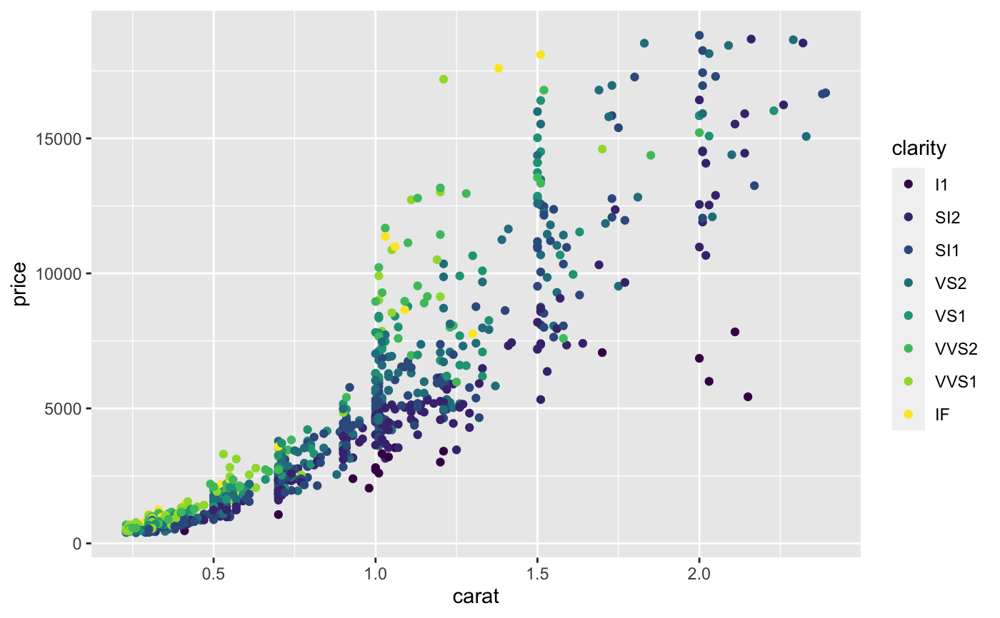
# Change scale label
d + scale_colour_hue()
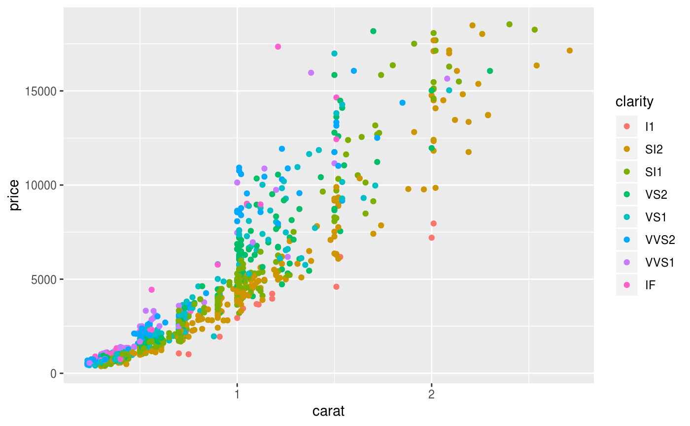
d + scale_colour_hue("clarity")
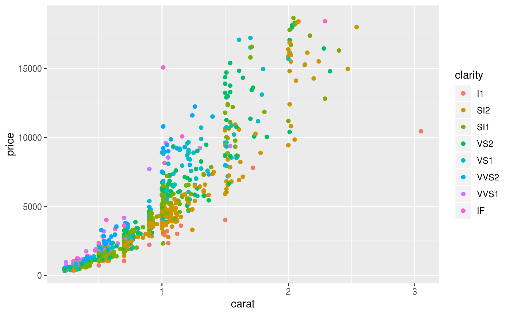
d + scale_colour_hue(expression(clarity[beta]))
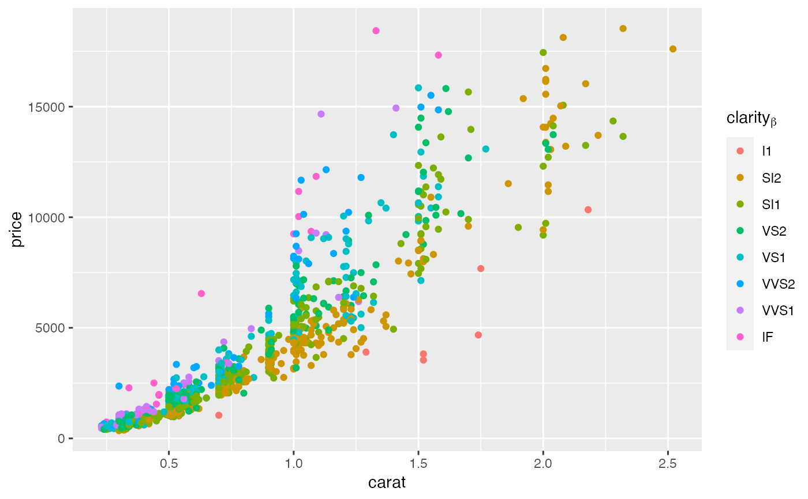
# Adjust luminosity and chroma
d + scale_colour_hue(l = 40, c = 30)
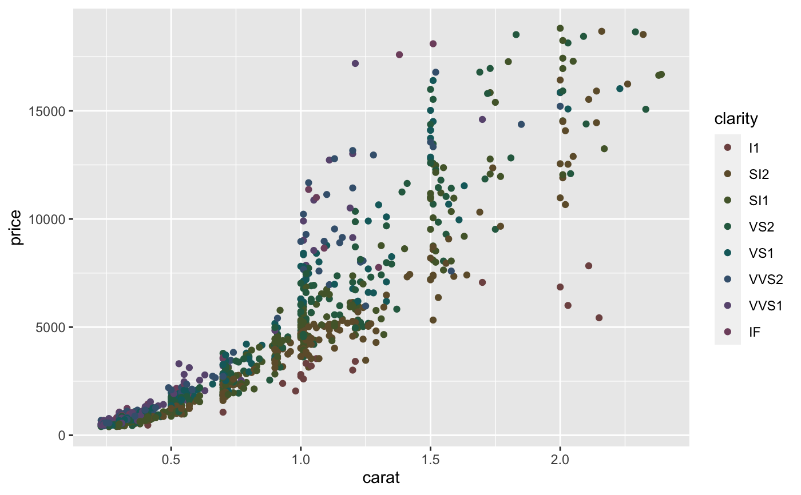
d + scale_colour_hue(l = 70, c = 30)
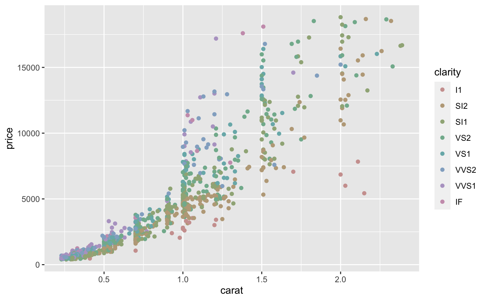
d + scale_colour_hue(l = 70, c = 150)
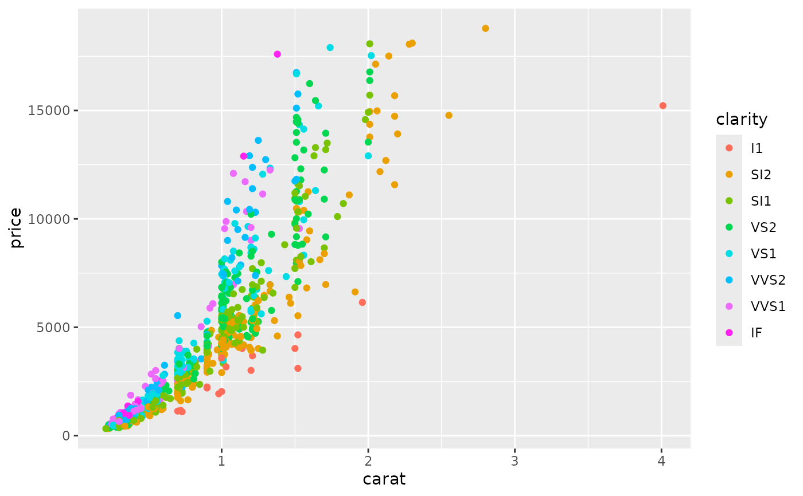
d + scale_colour_hue(l = 80, c = 150)
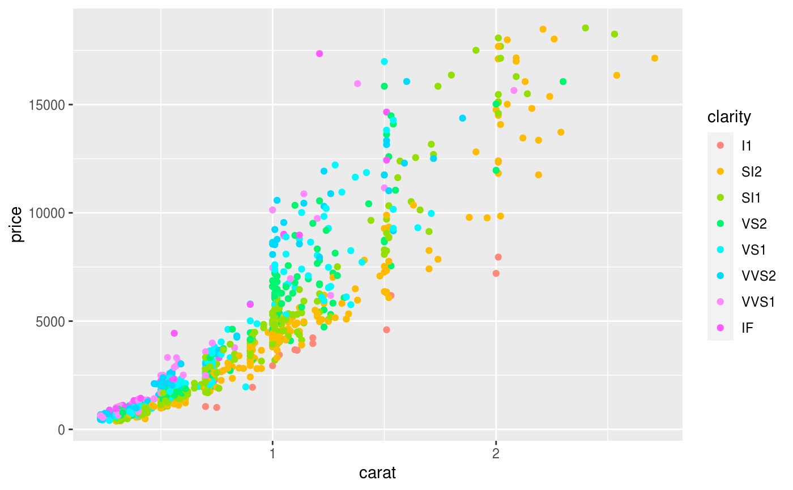
# Change range of hues used
d + scale_colour_hue(h = c(0, 90))
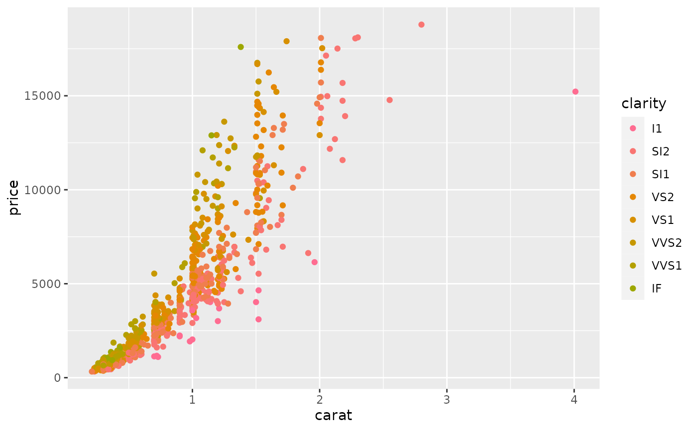
d + scale_colour_hue(h = c(90, 180))
d + scale_colour_hue(h = c(180, 270))
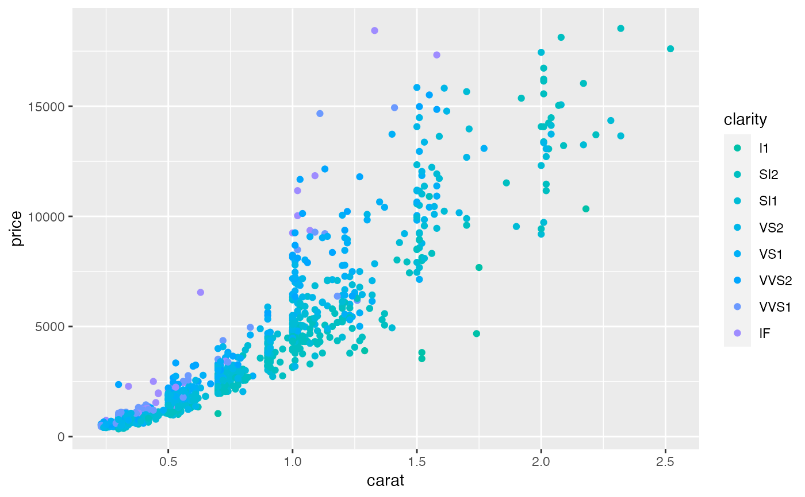
d + scale_colour_hue(h = c(270, 360))
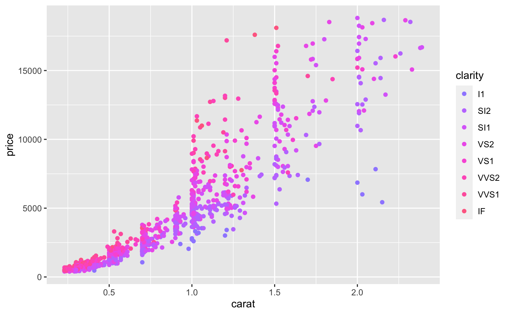
# Vary opacity
# (only works with pdf, quartz and cairo devices)
d <- ggplot(dsamp, aes(carat, price, colour = clarity))
d + geom_point(alpha = 0.9)
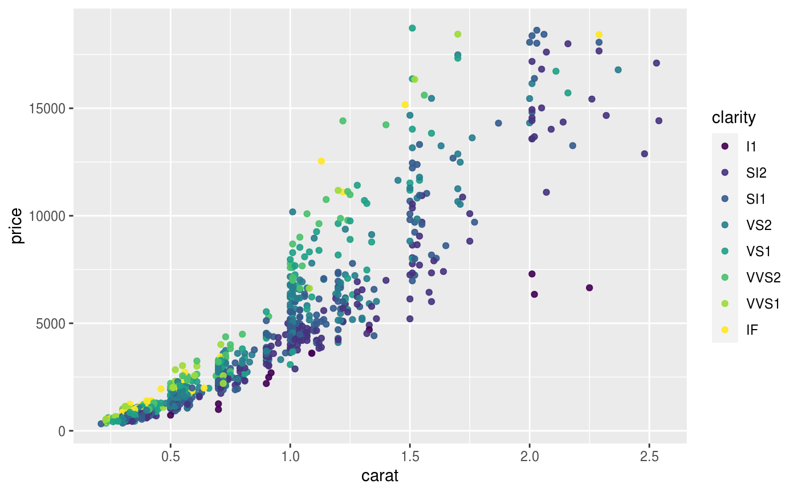
d + geom_point(alpha = 0.5)
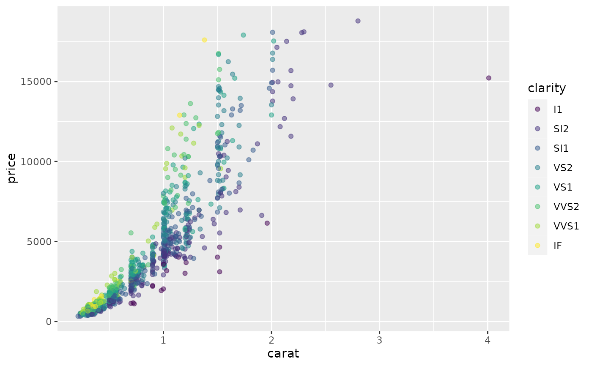
d + geom_point(alpha = 0.2)
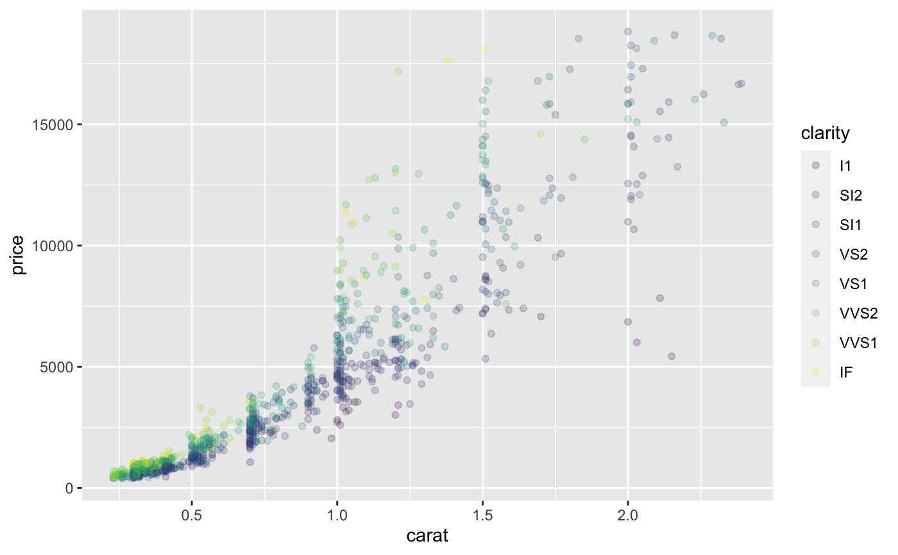
# Colour of missing values is controlled with na.value:
miss <- factor(sample(c(NA, 1:5), nrow(mtcars), replace = TRUE))
ggplot(mtcars, aes(mpg, wt)) +
geom_point(aes(colour = miss))
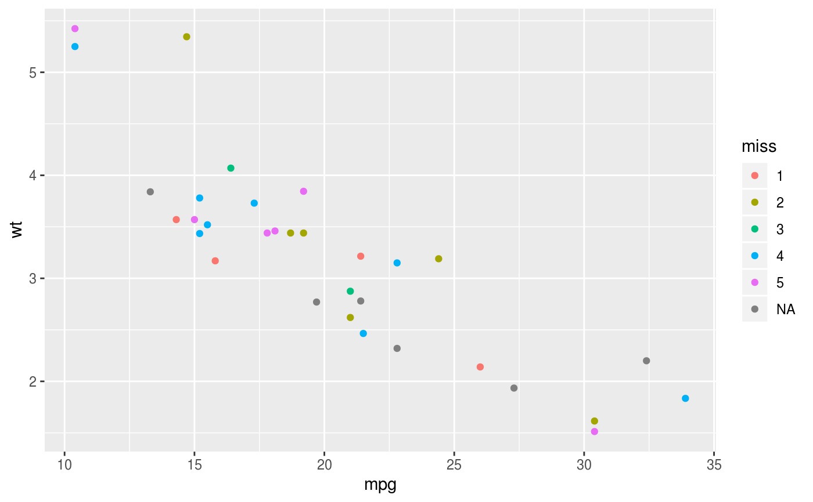
ggplot(mtcars, aes(mpg, wt)) +
geom_point(aes(colour = miss)) +
scale_colour_hue(na.value = "black")
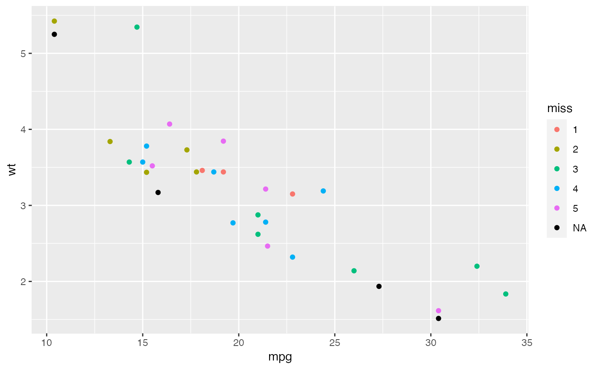
# }